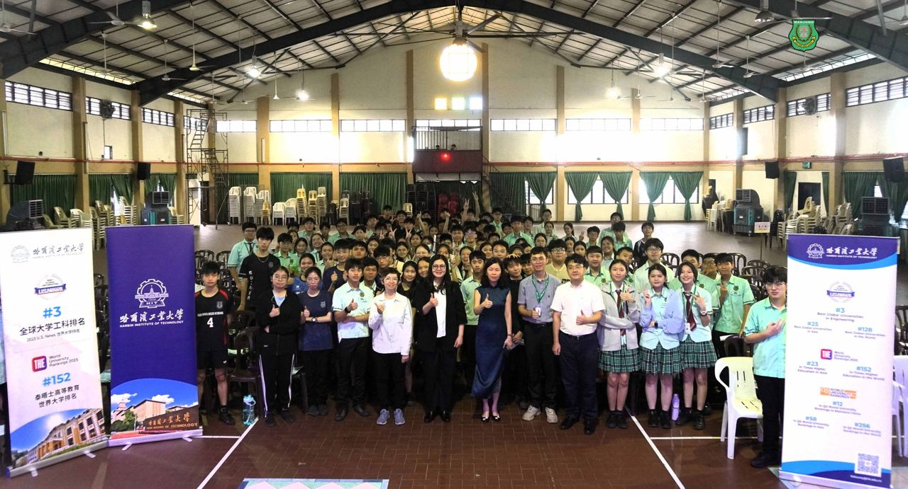
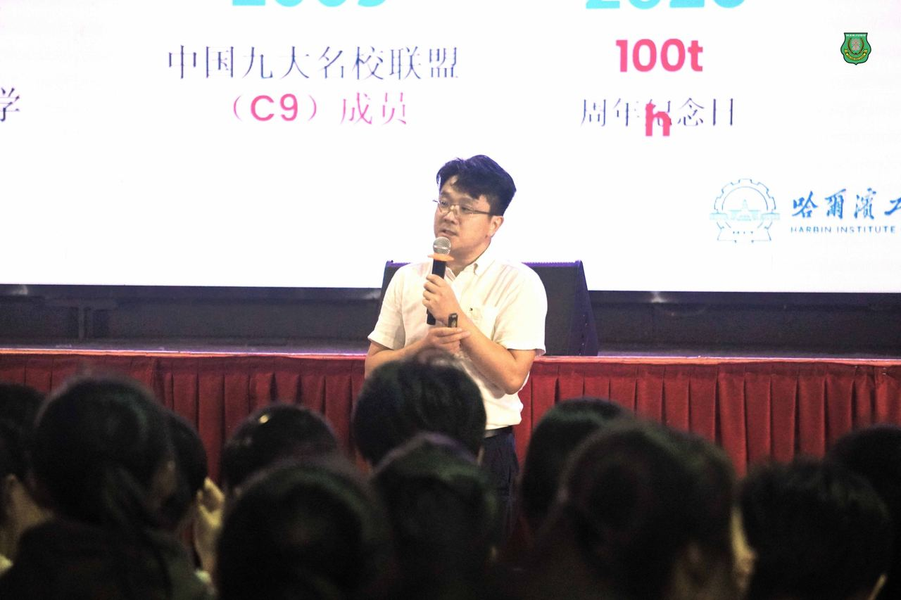
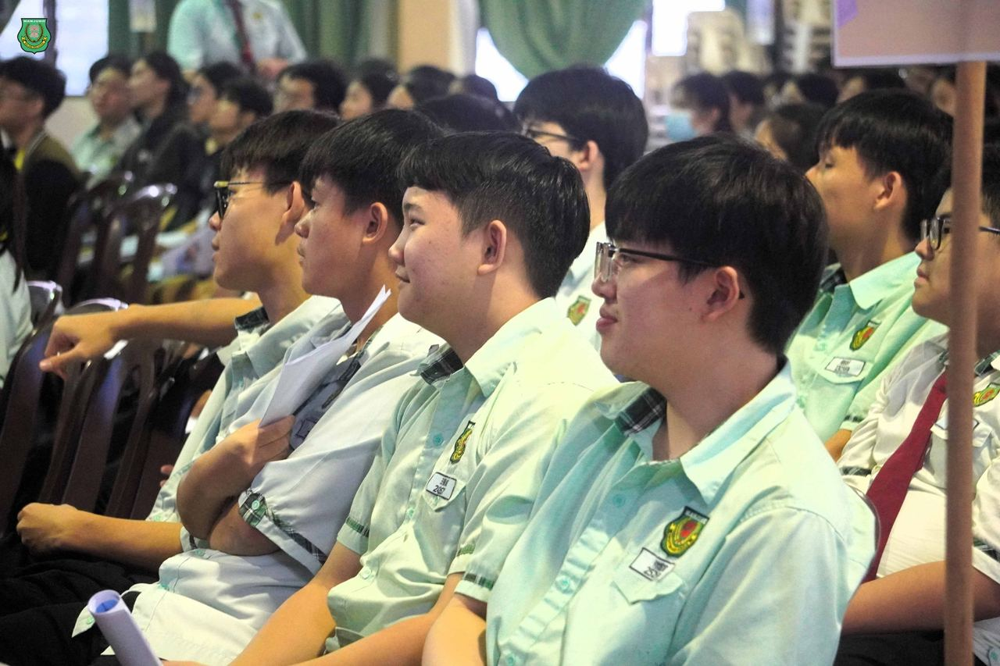
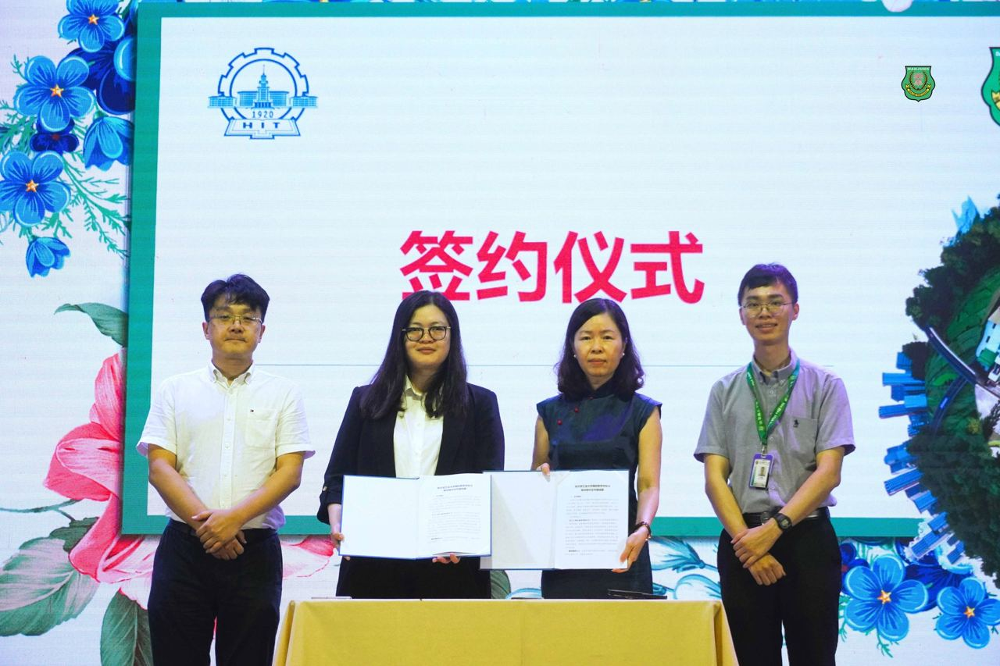
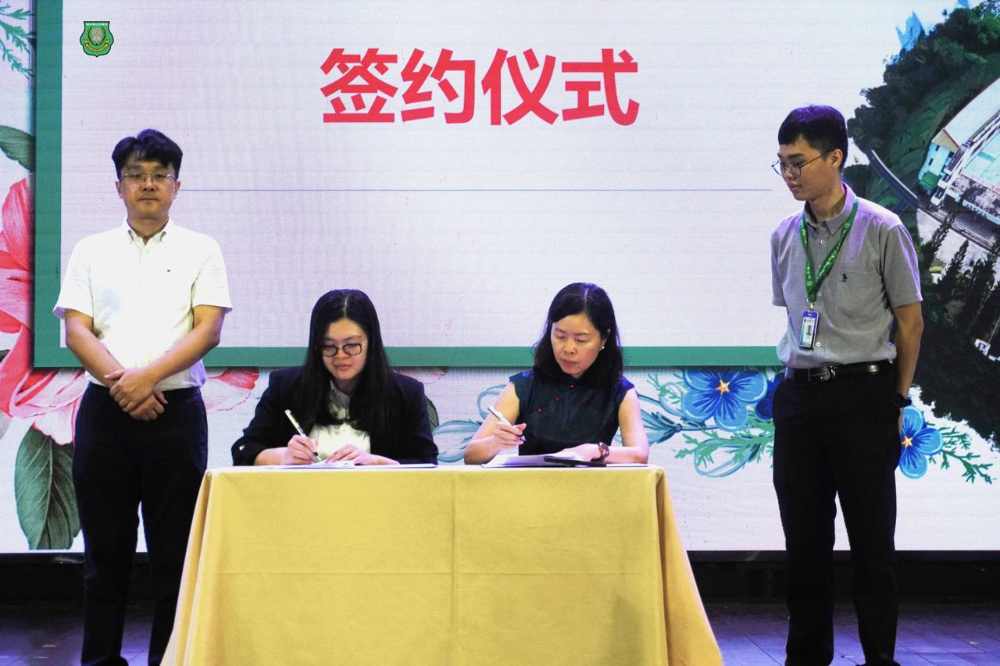
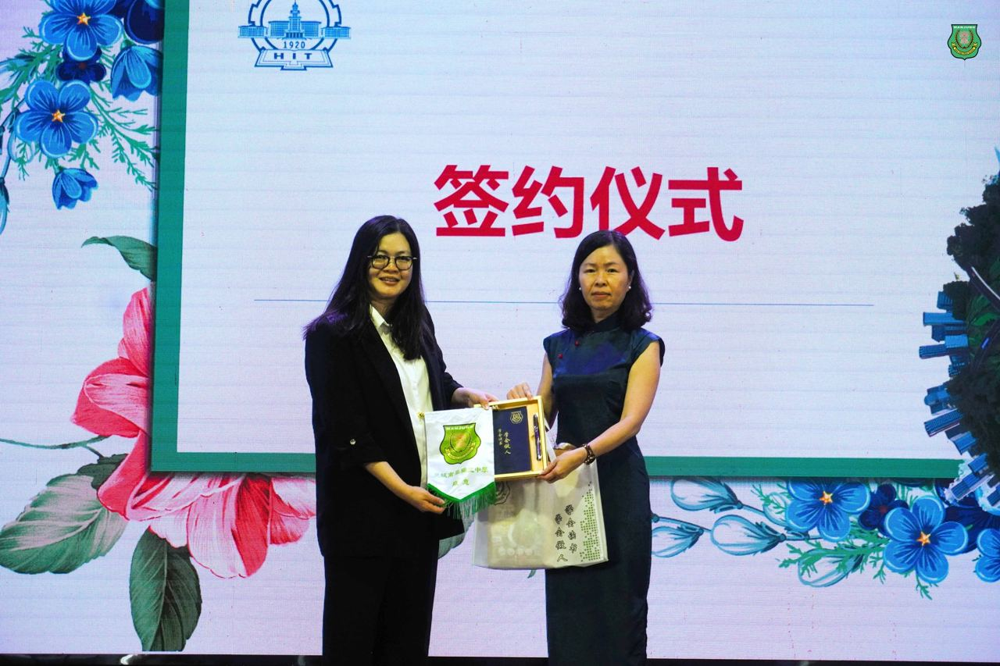
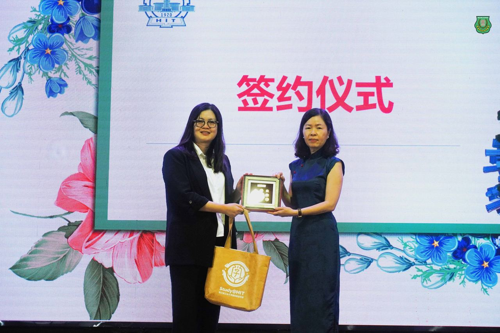

南华独中牵手中国航天第一校
南华独中牵手中国航天第一校
校长与陈晓葶主任签备忘录
筑梦世界级工程师摇篮
当南华独中人文底蕴，遇上中国“#航天第一校”硬核科技，关于未来与梦想的对话随着一纸合约的签署而正式展开。
中国顶尖学府—— #哈尔滨工业大学（HIT） 马来西亚海外教育中心代表团日前造访曼绒南华独立中学。在全校高三师生的见证下，校长陈丽冰博士与哈工大马来西亚海外教育中心主任 陈晓葶 #共同签署 并 交换 #合作备忘录。这一庄严的仪式，标志着两校正式确立合作伙伴关系，虽然“#优质生源基地”的挂牌仪式将择日举行，但今日的签约已率先为南华学子开辟了一条通往世界顶尖理工学府的康庄大道。
#硬核科普震撼全场，#点燃科研火种
签约仪式后，紧接着进行了一场别开生面的科技宣讲。由哈工大代表汪其兴老师主讲。 汪老师以哈工大在航天领域的辉煌贡献为切入点，带领南华师生一窥“中国航天第一校”的科研奥秘。从卫星发射到深空探测，他生动地描绘了科技如何突破引力、探索未知的过程。这不仅是一场升学讲座，更是一堂高水准的科普课，让在座的高三学生深刻感受到，原来世界级的科研殿堂并非遥不可及。
此次活动由本校辅导处精心筹办，旨在为高三毕业生提供更多元且具前瞻性的升学路径。 “#除了天空还有外太空”辅导处主任叶佳盛老师吁高三生“#以梦为马”对学生发出了深情的呼唤。
作为升学路上的引路人，叶佳盛老师以此句勉励学子：“年轻人要敢于做梦，更要以梦为马。你们的视野不应只局限于眼前的陆地或头顶的天空，因为“人外有人，天外有天”除了天空，还有外太空。” 他鼓励南华学子，哈工大的到来象征着一条通往世界顶尖舞台的通道已然打开，学生们应拿出勇气，去追逐那些看似遥远却充满无限可能的梦想。
#搭建通往世界的桥梁
校长陈丽冰博士对此次合作给予高度期待。她指出，南华独中一直致力于推动教育国际化，今日在同学们的见证下签署备忘录，是学校提升学术水平、拓宽学生升学视野的重要里程碑。 “我们引入世界名校的资源，就是为了告诉孩子，南华是你们走向世界的起点。只要你们敢于想象，学校就愿意为你们搭建通往星辰大海的桥梁。”
随着备忘录的交换与宣讲会圆满结束，学生们心中对于“未来”的定义被重新改写。这场跨越国界的学术交流，不仅带来了升学资讯，更在南华学子心中埋下了一颗探索宇宙、挑战极限的种子。






